Resources
Articles, guides, answers and films from Dr. Gorav Gupta, to help you make sense of mental health and addiction.
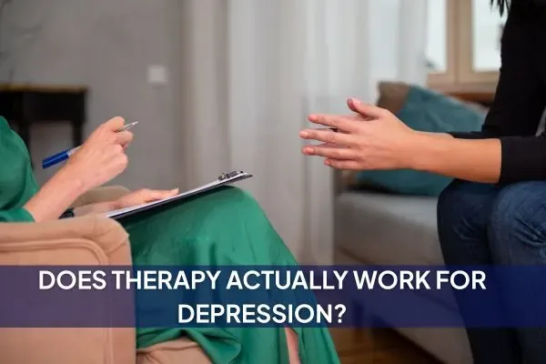
Depression & bipolartherapyDoes therapy actually work for depression?If you are stuck in the sticky loop of depression- let’s face it- it’s not an easy life to have. Just sitting on a couch facing a therapist might sound too simple. But let’s face the facts- its…Dr. Gorav Gupta · 2 min read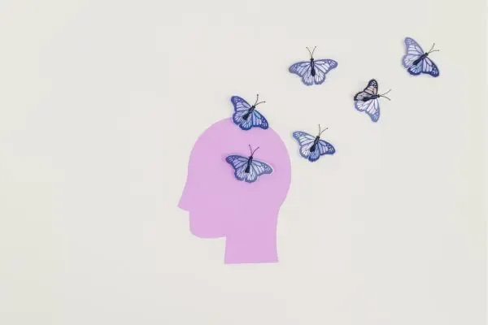
WellbeingMental HealthHow to maintain mental health while working remotelyRemote work setups definitely have their perks. But with perks, come some obvious downsides. The comfort of our homes is definitely inviting, but it comes with blurred boundaries and time consuming…Dr. Gorav Gupta · 2 min read Anxiety & OCDanxietyWhat is health anxiety and how it can be treatedHave you ever found yourselves googling symptoms even after a small cold spell? If so, you must have found a plethora of conditions that respond to it and then, your mind starts rushing. You wonder…Dr. Gorav Gupta · 2 min read
Anxiety & OCDanxietyWhat is health anxiety and how it can be treatedHave you ever found yourselves googling symptoms even after a small cold spell? If so, you must have found a plethora of conditions that respond to it and then, your mind starts rushing. You wonder…Dr. Gorav Gupta · 2 min read Wellbeingwhat kind of questions do psychiatrist ask?Walking into a room where questions loom around might be scary. That first appointment with a psychiatrist might feel overwhelming, especially when its your first time. It is natural to have doubts…Dr. Gorav Gupta · 2 min read
Wellbeingwhat kind of questions do psychiatrist ask?Walking into a room where questions loom around might be scary. That first appointment with a psychiatrist might feel overwhelming, especially when its your first time. It is natural to have doubts…Dr. Gorav Gupta · 2 min read Anxiety & OCDocdCan OCD be cured?If you have ever found yourself stuck in a loop of repetitive behaviors, OCD might have jumped over your mind at least once. The habit of saying ‘I’m quite OCD about this’ seldom leaves us, but it is…Dr. Gorav Gupta · 2 min read
Anxiety & OCDocdCan OCD be cured?If you have ever found yourself stuck in a loop of repetitive behaviors, OCD might have jumped over your mind at least once. The habit of saying ‘I’m quite OCD about this’ seldom leaves us, but it is…Dr. Gorav Gupta · 2 min read- Anxiety & OCDanxietyAnxiety symptoms you shouldn’t ignoreWe all feel that rumbling feeling in our guts from time to time- before a big presentation or while waiting for an important update in our lives. Usually, this feeling goes away with the resolution…Dr. Gorav Gupta · 2 min read
- WellbeingHow to learn coping mechanisms for mental healthWe all have had days where our mind feels heavy and the day feels like a burden. But sooner or later, we come out of that phase and continue with our lives. But what does it mean when these days…Dr. Gorav Gupta · 2 min read
- Wellbeingcan online psychiatrist prescribe medicationsToday, the world has taken a steep shift from physical to online presence. From simple ideas to the biggest of organizations, everyone has shifted their lives online. This also includes mental health…Dr. Gorav Gupta · 2 min read
 Addictionsubstance addiction treatmentseeking professional help in addiction disorderAddiction is not merely a habit- it is a condition that affects millions of lives worldwide. Whether it is about substance abuse or behavioral addictions, the struggle to deal with each remains…Dr. Gorav Gupta · 2 min read
Addictionsubstance addiction treatmentseeking professional help in addiction disorderAddiction is not merely a habit- it is a condition that affects millions of lives worldwide. Whether it is about substance abuse or behavioral addictions, the struggle to deal with each remains…Dr. Gorav Gupta · 2 min read Addictionalcohol addictionAlcohol Dependence vs Social DrinkingHave you ever wondered if your weekend alcohol indulgences are just a way to unwind- or something deep? Sometimes, these daily shenanigans to unwind and take a step back may turn into a reason to…Dr. Gorav Gupta · 2 min read
Addictionalcohol addictionAlcohol Dependence vs Social DrinkingHave you ever wondered if your weekend alcohol indulgences are just a way to unwind- or something deep? Sometimes, these daily shenanigans to unwind and take a step back may turn into a reason to…Dr. Gorav Gupta · 2 min read- Addictionaddiction recovery, nutritionThe Role of Nutrition in Addiction RecoveryWhenever we talk about mental health recovery, the emphasis is mostly on the interaction of therapies, medications and alternative methods. But a point that stays amiss in many conversations is the…Dr. Gorav Gupta · 2 min read
- AddictionBehavioural addictionFor a long period of time the term “addiction” was conceptualised in relation to substance use disorders (alcohol, cannabis, opioids etc). A recent growing understanding and interest in application…Dr. Gorav Gupta · 2 min read
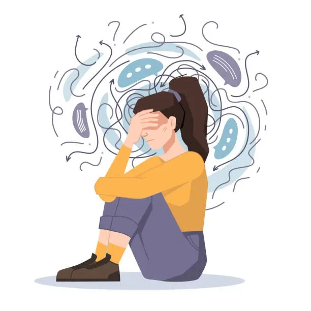
Addictionalcohol addiction, depressionLink between Alcohol Abuse & DepressionAlcohol abuse is a vicious cycle that blends in depression . These two issues go hand in hand, making interventions and treatment difficult in every situation. As a psychiatrist in Delhi, Dr. Gorav…Dr. Gorav Gupta · 2 min read- Anxiety & OCDAnxiety DisorderHow to Manage Anxiety? Tips by PsychiatristAnxiety is a common mental health condition that can affect anyone at any point in their lives. Be it a little test in the classroom or the most important presentation of your life- a sudden spike of…Dr. Gorav Gupta · 3 min read
 WellbeingpsychologistPsychiatrist or psychologist: Which is better?Today, as the society progresses, we accumulate a lot of stressors in many ways. As a part of the community, we as mental health practitioners understand the kind of issues that are loomingDr. Gorav Gupta · 5 min read
WellbeingpsychologistPsychiatrist or psychologist: Which is better?Today, as the society progresses, we accumulate a lot of stressors in many ways. As a part of the community, we as mental health practitioners understand the kind of issues that are loomingDr. Gorav Gupta · 5 min read- WellbeingIs Mental Illness Curable? Insights from Psychiatrist in Delhi, Dr. Gorav GuptaMental illness is a topic that is surrounded by stigma, fear and uneasiness even with such awareness around it. As an expert, Dr. Gorav Gupta has made numerous contributions to the society with his…Dr. Gorav Gupta · 5 min read
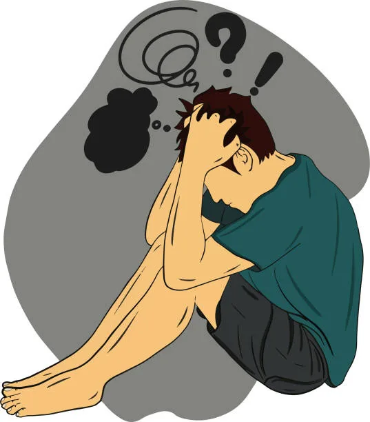
SchizophreniaschizophreniaThe struggles of Schizophrenia: Tackling myths with the best psychiatrist in delhi for schizophreniaSchizophrenia can be explained as one of the most highly taxing conditions that a person can encounter. Without much awareness and support in its regard, it can become a major mental health condition…Dr. Gorav Gupta · 5 min read- Wellbeingक्यों लगता है अपने साथ सारी दुनिया से डरस्कीजोफ्रेनिया एक प्रकार का मानसिक रोग है जिसमें रोगी की सोचने-विचारने की प्रक्रिया, भावनात्मक अभिव्यक्ति और व्यक्तिगत, पारिवारिक व सामाजिक उत्तरदायित्वों के प्रति व्यवहार पर प्रतिकूल प्रभाव पड़ता…Dr. Gorav Gupta · 3 min read
 Wellbeingocdओसीडी से मिलेगी आपको मुक्ति, डीप टीएमएस थेरेपी का असर मरीजों को दे रहा लाभ?ऑब्सेसिव-कंपल्सिव डिसऑर्डर ( OCD ) एक तरह की मानसिक बीमारी है जिसमें बार-बार एक ही तरह के विचार आते हैं. दुनियाभर में ओसीडी से लाखों लोग ग्रसित हैं जिससे उन्हें तनाव होता है और उनकी रूटीन लाइफ पर…Dr. Gorav Gupta · 3 min read
Wellbeingocdओसीडी से मिलेगी आपको मुक्ति, डीप टीएमएस थेरेपी का असर मरीजों को दे रहा लाभ?ऑब्सेसिव-कंपल्सिव डिसऑर्डर ( OCD ) एक तरह की मानसिक बीमारी है जिसमें बार-बार एक ही तरह के विचार आते हैं. दुनियाभर में ओसीडी से लाखों लोग ग्रसित हैं जिससे उन्हें तनाव होता है और उनकी रूटीन लाइफ पर…Dr. Gorav Gupta · 3 min read WellbeingMental Health, Mental Health TestsOnline Mental Health Tests: A Convenient Way to Assess Your Well-BeingYour wellbeing is a mixture of a variety of things. With a life that is paced like a supercar, our well being sometimes takes a backseat. We forget our original priorities and what we have been…Dr. Gorav Gupta · 5 min read
WellbeingMental Health, Mental Health TestsOnline Mental Health Tests: A Convenient Way to Assess Your Well-BeingYour wellbeing is a mixture of a variety of things. With a life that is paced like a supercar, our well being sometimes takes a backseat. We forget our original priorities and what we have been…Dr. Gorav Gupta · 5 min read- WellbeingTop Signs You Need to See a Psychiatrist in GurgaonLiving in a city like Gurgaon, individuals face challenges related to mental health like stress and emotional difficulties as well which can make it very difficult to enjoy life, or have a lack of…Dr. Gorav Gupta · 5 min read
- WellbeingHow to choose the right psychiatrist near me: Tips for better mental healthMental health plays a vital role in overall well-being, yet it is often ignored. Issues like depression , anxiety , schizophrenia , bipolar disorder , and post-traumatic stress disorder (PTSD), are…Dr. Gorav Gupta · 5 min read
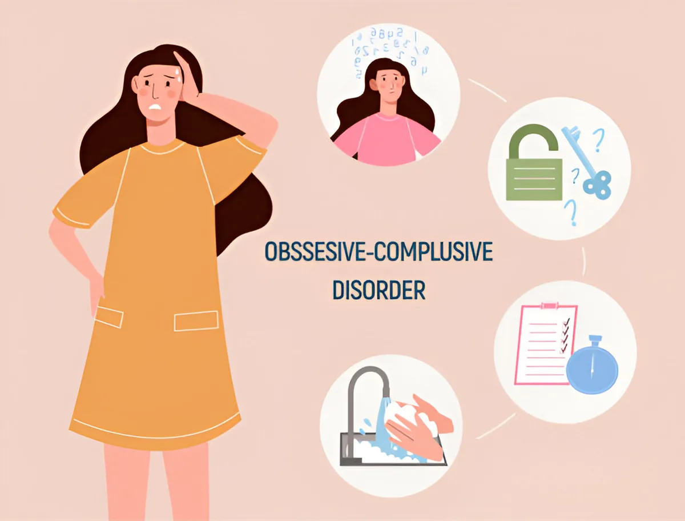
Anxiety & OCDAnxiety Disorder, ocdFrom Anxiety to OCD: How Expert Psychiatrists Can Transform LivesDisorders can truly cripple the life of an individual, to extents where they can lose out on basic necessities and feel unfulfilled in every aspect of their life. Anxiety, depression and stress are…Dr. Gorav Gupta · 5 min read- WellbeingAI, Artificial IntelligenceCan AI replace human counselors?Artificial Intelligence has definitely taken over the world, and no industry has been safe from its brunt. The effects of AI have been massive- from recent job layovers to whole new industries on the…Dr. Gorav Gupta · 5 min read
- Addictionaddiction disorderManage addiction disorder with expert interventionAddiction can become a huge roadblock in the lives of people- whether it comes from them or it is inflicted on the family. Every single person endures the outcome of this and they suffer in their own…Dr. Gorav Gupta · 5 min read
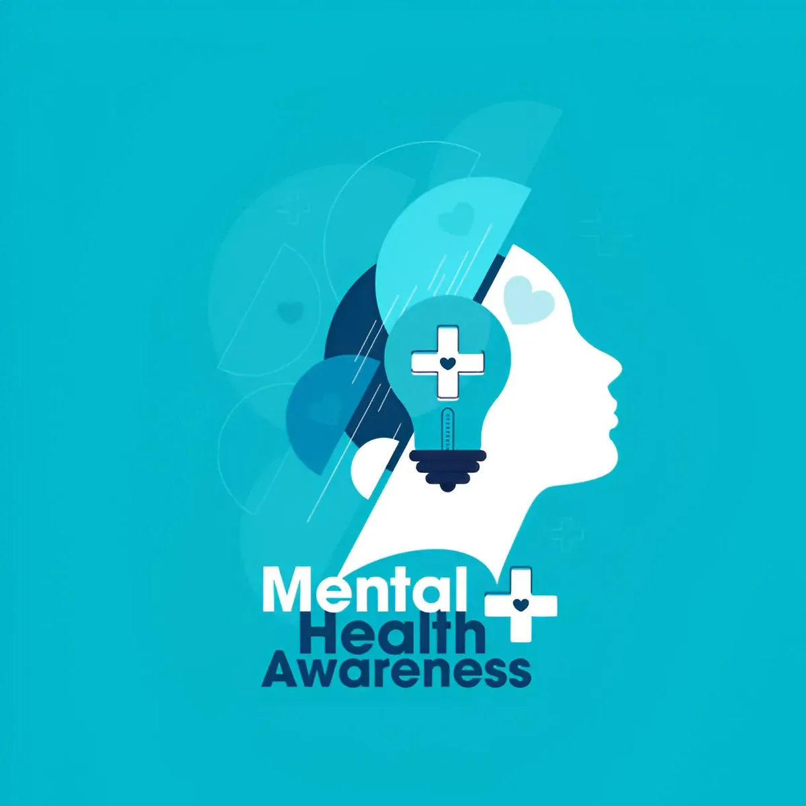
WellbeingMental Health, ocdHow to seek help for your mental health: Moving past the stigmaWe’re living in a world of struggles and constant judgment. Ideas and words float around us- and we catch them without thinking twice. We attach ourselves to words that do not mean anything- and…Dr. Gorav Gupta · 5 min read Personalitynarcissistic personality disorder, NPDWays to tackle narcissistic personality disorder‘She’s so bossy, always attracting attention- such a narcissist’ ‘If the conversation is not about her, her narcissism takes over’. If you have heard such sentences about someone, or know someone who…Dr. Gorav Gupta · 5 min read
Personalitynarcissistic personality disorder, NPDWays to tackle narcissistic personality disorder‘She’s so bossy, always attracting attention- such a narcissist’ ‘If the conversation is not about her, her narcissism takes over’. If you have heard such sentences about someone, or know someone who…Dr. Gorav Gupta · 5 min read AddictionAlcohol, alcohol addictionHow to help a recovering addict? Insights from a psychiatrist for alcohol addiction.It is very common to see people struggling with many things while they recover from addiction. From mental, physical to emotional constraints, they are in a space where they need constant support and…Dr. Gorav Gupta · 5 min read
AddictionAlcohol, alcohol addictionHow to help a recovering addict? Insights from a psychiatrist for alcohol addiction.It is very common to see people struggling with many things while they recover from addiction. From mental, physical to emotional constraints, they are in a space where they need constant support and…Dr. Gorav Gupta · 5 min read- Schizophreniaschizophrenia treatmentIdentifying intricacies of schizophrenia: A case reviewSchizophrenia is a debilitating condition that affects the person’s senses to perceive and think in the right manner. Highly characterized by the presence of hallucinations and delusions, it makes…Dr. Gorav Gupta · 5 min read
- Depression & bipolardepression, depression treatmentDepression: Causes, Symptoms, and Treatments for BettermentDim lights, a haphazard room, and uncleanliness all around. Can you relate to this scene in your life or from the life of a loved one? Do you feel that your friend/family member has lost their zeal…Dr. Gorav Gupta · 6 min read
- Addictionalcohol addiction, substanceSubstance use disorder vs. Social use: What’s the difference?Substance use and substance use disorder are alternating terms that are being used to define a specific condition, without maintaining its exact meaning. A disorder separates itself from social use…Dr. Gorav Gupta · 5 min read
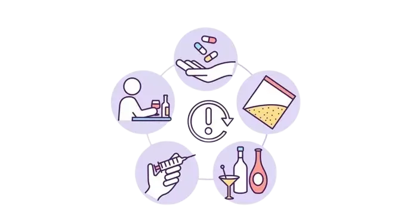
AddictionRelapse, Relapse preventionDealing with relapse & its preventionRelapse is a condition where a person goes back to their old and addictive ways of consuming illegal substances after undergoing a structured rehabilitation. Relapse, although, is not uncommon. This…Dr. Gorav Gupta · 4 min read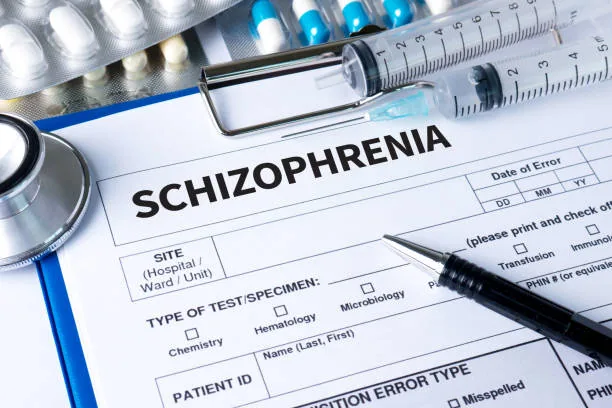
AddictionschizophreniaSigns of relapse in SchizophreniaSchizophrenia is a chronic mental health condition that affects all aspects of a person’s life. Their thoughts, behavior, and cognition are affected to the extent that they cannot distinguish between…Dr. Gorav Gupta · 5 min read- Depression & bipolarBipolar Disorder treatment, Bipolar Disorder warnig signsBipolar disorder: Early warning signs and prevention measures.We all have experienced mood swings, but some people are prone to experiencing such fluctuations more than usual- the frequency of these changes is rapid and the mood states can cause confusion. In…Dr. Gorav Gupta · 5 min read
 Wellbeingmental illness, mental well beingHow to enhance and monitor our mental well-being?Taking care of yourself is easier than you might think. It’s just like looking in the mirror- a little closely, asking yourselves the same questions and answering them honestly.Dr. Gorav Gupta · 5 min read
Wellbeingmental illness, mental well beingHow to enhance and monitor our mental well-being?Taking care of yourself is easier than you might think. It’s just like looking in the mirror- a little closely, asking yourselves the same questions and answering them honestly.Dr. Gorav Gupta · 5 min read- PersonalityPersonality DisordersPersonality Disorders- How to recognize the signs and pursue treatmentPersonality refers to the way a person behaves, feels, and thinks. Every individual has a different pattern for a presented situation, and these differences are necessary for establishing a unique…Dr. Gorav Gupta · 5 min read
 AddictionDrug Addiction :How to help your loved one fight Marijuana addiction?In recent years, use of marijuana as a recreational drug has gone up multifolds. With legalization within some parts of the US and other areas around the world, marijuana has shown its potency to…Dr. Gorav Gupta · 5 min read
AddictionDrug Addiction :How to help your loved one fight Marijuana addiction?In recent years, use of marijuana as a recreational drug has gone up multifolds. With legalization within some parts of the US and other areas around the world, marijuana has shown its potency to…Dr. Gorav Gupta · 5 min read- Addictionanxiety, Anxiety DisorderSubstance Induced Anxiety Disorder: How drugs can induce anxietyAnxiety is the most common aftermath of substance abuse, often accompanied by stress and depression as well. Anxiety disorder is one of the most commonly occurring conditions- about 30% people…Dr. Gorav Gupta · 5 min read
 Schizophreniamental illness, schizophreniaEffective Approaches in Schizophrenia Treatment: New AvenuesSchizophrenia is a disabling disorder that certainly affects the functioning and quality of life. Characterized by hallucinations, delusions, disorganized thinking and behavior patterns, such people…Dr. Gorav Gupta · 5 min read
Schizophreniamental illness, schizophreniaEffective Approaches in Schizophrenia Treatment: New AvenuesSchizophrenia is a disabling disorder that certainly affects the functioning and quality of life. Characterized by hallucinations, delusions, disorganized thinking and behavior patterns, such people…Dr. Gorav Gupta · 5 min read Anxiety & OCDschizophrenia, stressWhen Stress takes over : When to Approach a Psychiatrist for help?Stress- the most commonly used term in the lives of 20th century human- yet one of the most ignored facets of our lives.Dr. Gorav Gupta · 5 min read
Anxiety & OCDschizophrenia, stressWhen Stress takes over : When to Approach a Psychiatrist for help?Stress- the most commonly used term in the lives of 20th century human- yet one of the most ignored facets of our lives.Dr. Gorav Gupta · 5 min read- WellbeingEating Disorders, Rise of EatingThe Rise of Eating Disorders : The rise of Dietary trends affects the mindEating disorders are taking over the society’s young population, making it a change that has suddenly taken over due to dietary changes and trends introduced during the last few years.Dr. Gorav Gupta · 4 min read
 Addictionaddiction treatmentAddiction & Its Effects on your Overall HealthHealth takes a serious turn when it is encountered with elements that are harmful to it in every sense of the word. Addiction and abuse are two very big issues in maintaining health in today’s…Dr. Gorav Gupta · 6 min read
Addictionaddiction treatmentAddiction & Its Effects on your Overall HealthHealth takes a serious turn when it is encountered with elements that are harmful to it in every sense of the word. Addiction and abuse are two very big issues in maintaining health in today’s…Dr. Gorav Gupta · 6 min read- Anxiety & OCDocd, OCD treatmentA comprehensive approach towards OCD treatmentA situation where your mind is bombarded with unwanted thoughts- sounds uncomfortable?Dr. Gorav Gupta · 4 min read
 WellbeingStart your recovery journey with the best psychiatrist in DelhiWhen medical expertise is defined, Tulasi Healthcare is a name that is prominent among top psychiatrists in Delhi NCR region. With 40+ years of experience and 25+ hyper-specialized staff bringing in…Dr. Gorav Gupta · 5 min read
WellbeingStart your recovery journey with the best psychiatrist in DelhiWhen medical expertise is defined, Tulasi Healthcare is a name that is prominent among top psychiatrists in Delhi NCR region. With 40+ years of experience and 25+ hyper-specialized staff bringing in…Dr. Gorav Gupta · 5 min read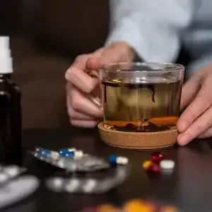
Addictionalcohol addictionAlcohol Addiction TreatmentAlcohol Addiction is a severe circumstance- it has the potential to tear families apart, ruin life prospects and possibly damage the potential of a healthy life altogether.Dr. Gorav Gupta · 5 min read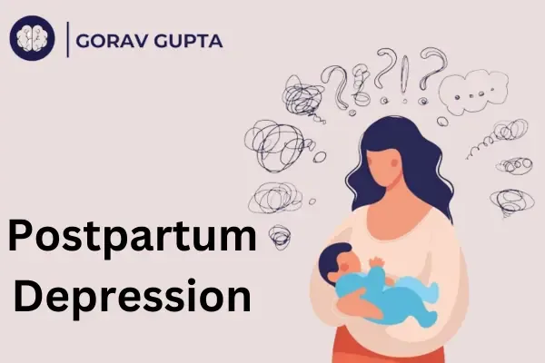
Depression & bipolarpostpartum depressionPostpartum DepressionCommonly known as the ‘baby blues’, postpartum depression is a deeply set medical condition that arises after a baby’s birth. Accompanying a strong feeling of anxiety, sadness and persisting…Dr. Gorav Gupta · 5 min read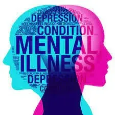
WellbeingMental IllnessesChallenging Misconceptions Surrounding Mental IllnessesMisconceptions about mental illnesses persist despite increasing awareness and efforts to reduce stigma. These misunderstandings contribute to discrimination, difficulty in accessing treatment, and…Dr. Gorav Gupta · 2 min read- WellbeingMental HealthMental Health issues among elderly populationThe elderly population experiences mental health problems that contribute to their general health condition greatly. Below is a list of common mental health problems among the old.Dr. Gorav Gupta · 2 min read
- Anxiety & OCDAnxiety DisorderHow to differentiate between stress and anxiety?Stress and anxiety are related concepts, but they refer to different experiences and can have distinct characteristics. Here are the key differences between stress and anxiety described by best…Dr. Gorav Gupta · 2 min read
- SchizophreniaschizophreniaTreatment of Schizophrenia by Psychiatrists: A Comprehensive ApproachSchizophrenia is a complex and chronic mental disorder that requires specialized care. Psychiatrists play a critical position within the prognosis and treatment of schizophrenia, employing a…Dr. Gorav Gupta · 2 min read
 Addictionalcohol addictionAlcohol addiction treatment overview from best psychiatrist in DelhiAlcohol addiction treatment is a complicated and multifaceted manner that requires a comprehensive and individualized approach. Whether you’re in search of treatment for your self or assisting…Dr. Gorav Gupta · 4 min read
Addictionalcohol addictionAlcohol addiction treatment overview from best psychiatrist in DelhiAlcohol addiction treatment is a complicated and multifaceted manner that requires a comprehensive and individualized approach. Whether you’re in search of treatment for your self or assisting…Dr. Gorav Gupta · 4 min read Addictionalcohol addictionStages of alcohol addiction explained by a psychiatristAlcohol dependence, also known as alcoholism or alcohol use disorder (AUD), is a condition characterized by a strong craving for alcohol, continued use despite negative consequences, the inability to…Dr. Gorav Gupta · 3 min read
Addictionalcohol addictionStages of alcohol addiction explained by a psychiatristAlcohol dependence, also known as alcoholism or alcohol use disorder (AUD), is a condition characterized by a strong craving for alcohol, continued use despite negative consequences, the inability to…Dr. Gorav Gupta · 3 min read- WellbeingAngerAnger Management: A Guide to A Healthier LifeAnger is a powerful and natural emotion that everyone experiences at some point in their lives. It can range from mild irritation to intense rage and can be triggered by various situations, including…Dr. Gorav Gupta · 3 min read
- SchizophreniaHallucinationWhat is a Hallucination?A hallucination is a perceived experience in which an individual perceives something that is not present in their external environment. These sensory perceptions can occur in any of the five senses…Dr. Gorav Gupta · 2 min read
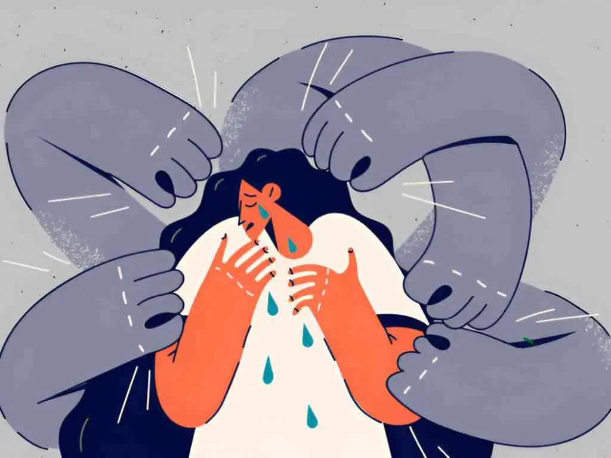
Depression & bipolarself harmwhat is self-harm and its treatmentSelf-harm, also known as self-injury or self-mutilation, refers to the act of intentionally causing harm to oneself, often as a way to cope with emotional pain, stress, or overwhelming emotions. It…Dr. Gorav Gupta · 2 min read- Wellbeingrelaxation techniquesRelaxation TechniquesRelaxation techniques can be valuable tools for managing stress , anxiety , and promoting overall mental well-being. Some relaxation techniques suggested by a psychiatristDr. Gorav Gupta · 2 min read
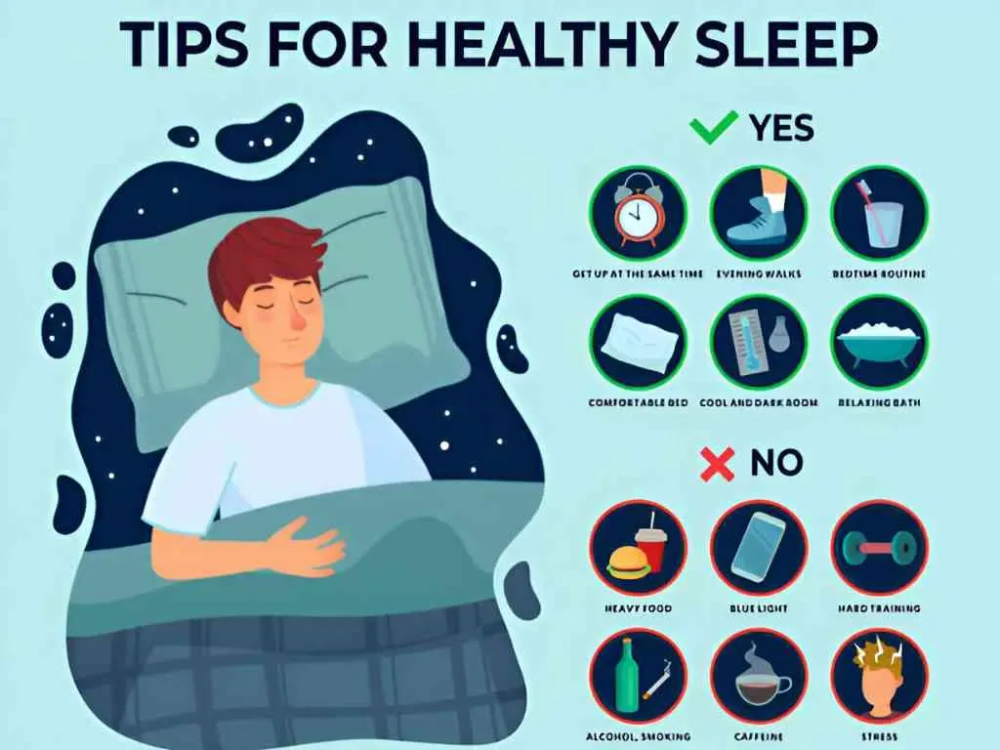
Wellbeingsleep disorderExpert Tips for Healthy SleepSleep is a cornerstone of mental and physical well-being, playing a vital role in cognitive function, emotional regulation, and overall health. A psychiatrist understands the profound impact that…Dr. Gorav Gupta · 2 min read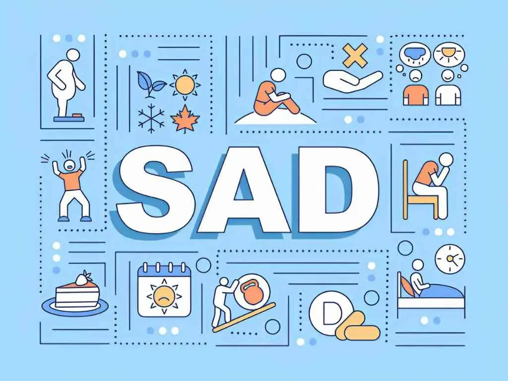
Depression & bipolarSeasonal Affective Disorder7 Effective Tips to Manage Seasonal Affective DisorderSeasonal Affective Disorder (SAD) is a type of depression that occurs at a specific time of year, usually during the fall and winter months when there is less natural sunlight. Here are seven…Dr. Gorav Gupta · 2 min read- AddictionAtypical antipsychoticAtypical antipsychotic drugs explained by a psychiatrist in DelhiAtypical antipsychotic drugs, also known as second-generation antipsychotics, are a class of medications used primarily to treat various mental health disorders, particularly schizophrenia, bipolar…Dr. Gorav Gupta · 2 min read
- AddictionAlcohol Dependence Treatment by Addiction PsychiatristThe treatment of alcohol dependence typically involves a comprehensive and individualized approach that addresses both the physical and psychological aspects of the condition.Dr. Gorav Gupta · 2 min read
- Anxiety & OCDstressStrategies for Managing Stress by the Best Psychiatrist in DelhiWork-related stress is a common challenge that many individuals face in today’s fast-paced professional world. It’s important to have effective strategies in place to navigate and mitigate this…Dr. Gorav Gupta · 3 min read
 Anxiety & OCDanxietyNatural Remedies for Alleviating Anxiety: By the Best Psychiatrist in IndiaAnxiety is a common mental health condition that can have a profound impact on daily life. While professional treatment is essential for cases resulting in dysfunctional life, there are various…Dr. Gorav Gupta · 3 min read
Anxiety & OCDanxietyNatural Remedies for Alleviating Anxiety: By the Best Psychiatrist in IndiaAnxiety is a common mental health condition that can have a profound impact on daily life. While professional treatment is essential for cases resulting in dysfunctional life, there are various…Dr. Gorav Gupta · 3 min read- Personalitynarcissistic personality disorderNarcissistic Personality Disorder (NPD) : A Complete OverviewIt is a mental health condition characterized by a pervasive pattern of grandiosity, a need for self-admiration, and a lack of empathy for others. Individuals with NPD tend to have an inflated sense…Dr. Gorav Gupta · 4 min read
- Personalityboarderline personality disorderTREATMENT OF BORDERLINE PERSONALITY DISORDERThe treatment of Borderline Personality Disorder (BPD) involves a comprehensive and multi-dimensional approach that addresses various aspects of the condition. It typically includes psychotherapy…Dr. Gorav Gupta · 2 min read
 Anxiety & OCDmedication, ocdMedications for OCD Treatment: A Psychiatrist SuggestionsObsessive-Compulsive Disorder (OCD ) is a complex mental health condition characterized by intrusive thoughts (obsessions) and repetitive behaviors (compulsions). While therapy remains a cornerstone…Dr. Gorav Gupta · 3 min read
Anxiety & OCDmedication, ocdMedications for OCD Treatment: A Psychiatrist SuggestionsObsessive-Compulsive Disorder (OCD ) is a complex mental health condition characterized by intrusive thoughts (obsessions) and repetitive behaviors (compulsions). While therapy remains a cornerstone…Dr. Gorav Gupta · 3 min read- Anxiety & OCDanxietyTREATMENT OF ANXIETY WITHOUT MEDICATION EXPLAINED BY A PSYCHIATRISTThere are several non-medication approaches that a psychiatrist might recommend for the treatment of anxiety. It’s essential to consult with a qualified healthcare professional like a senior…Dr. Gorav Gupta · 5 min read
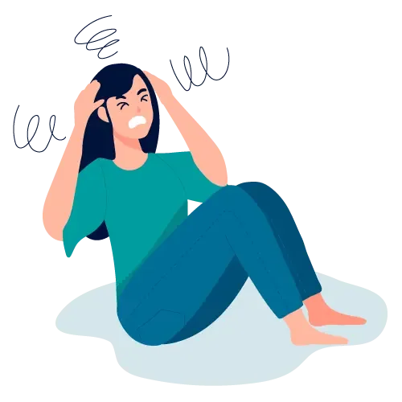
Anxiety & OCDpanic disorderPANIC DISORDERPanic disorder is a type of anxiety disorder characterized by recurrent and unexpected panic attacks, which are intense periods of fear or discomfort. Fortunately, there are effective treatments…Dr. Gorav Gupta · 3 min read- Wellbeingmental illnessEARLY SIGNS OF MENTAL ILLNESSEarly signs of mental illness can vary widely depending on the specific disorder and the individual. It’s important to note that experiencing one or more of these signs does not necessarily indicate…Dr. Gorav Gupta · 5 min read
- AddictionAlcohol Withdrawal ManagementComprehensive Management of Alcohol Withdrawal Symptoms: A Senior Psychiatrist’s ApproachAlcohol withdrawal syndrome (AWS) is a potentially life-threatening condition that can manifest in individuals with a history of chronic alcohol abuse. As a senior psychiatrist Dr. Gorav Gupta with…Dr. Gorav Gupta · 3 min read
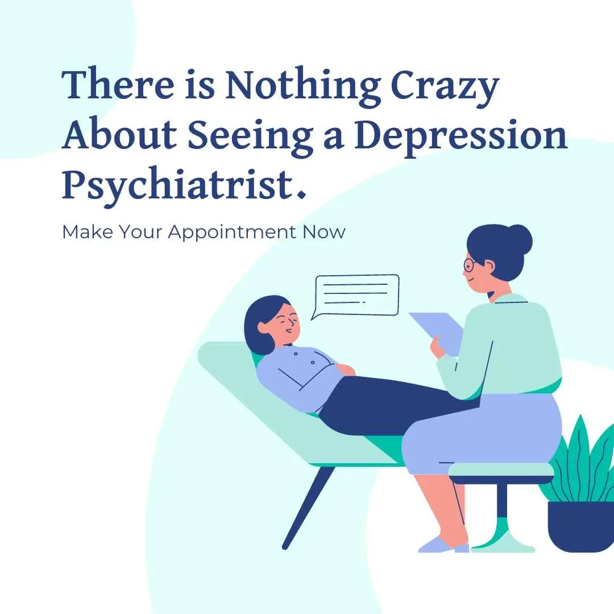
Depression & bipolarTreatment-Resistant DepressionAdvancing Beyond Boundaries: Effective Strategies for Managing Treatment-Resistant DepressionTreatment-resistant depression is a complex clinical condition that demands a comprehensive and individualized approach. As a psychiatrist in Delhi specializing in mood disorders, Dr. Gorav Gupta has…Dr. Gorav Gupta · 3 min read- Wellbeingdtms, rtmsA comparison between dTMS and rTMS by a psychiatrist.It’s important to note that the choice between dTMS and rTMS depends on the specific condition being treated, the depth of stimulation required, and the expertise and equipment available at the…Dr. Gorav Gupta · 2 min read
- Addictionalcohol addictionGuidelines for Alcohol AddictionAlcohol addiction is a health issue that affects individuals and communities worldwide. As a busy metropolis with a diverse population, Delhi presents unique challenges in addressing alcohol…Dr. Gorav Gupta · 3 min read
- Anxiety & OCDAnxiety DisorderAnxiety Disorder and its Treatment by Psychiatrist DR Gorav GuptaAnxiety disorders are among the most common mental health problem world over, affecting millions of people of all ages. These disorders manifest in various forms, such as generalized anxiety disorder…Dr. Gorav Gupta · 6 min read
- Schizophreniaschizophrenia, Schizophrenia SymptomsSchizophrenia Symptoms and Coping TipsSchizophrenia!! The name itself gives a spine-chilling, hair-raising sensation. Thanks to the latest advancement in the field of medical science, though schizophrenia is not completely curable but it…Dr. Gorav Gupta · 6 min read
 AddictionsmokingTips to Quit Smoking‘ Cigarette smoking is injurious to health ’ – The common health warning available on every cigarette packet for decades. Still the rising habit of cigarette smoking from teens to older people…Dr. Gorav Gupta · 6 min read
AddictionsmokingTips to Quit Smoking‘ Cigarette smoking is injurious to health ’ – The common health warning available on every cigarette packet for decades. Still the rising habit of cigarette smoking from teens to older people…Dr. Gorav Gupta · 6 min read Anxiety & OCDocd, Treatment for OCDNew Advanced Treatment for OCDHave I locked the main door of my flat!! Probably Yes!! Every morning I lock the main door of my flat before leaving for office. Let me check once, if by mistake I have left it unlocked, burglary may…Dr. Gorav Gupta · 5 min read
Anxiety & OCDocd, Treatment for OCDNew Advanced Treatment for OCDHave I locked the main door of my flat!! Probably Yes!! Every morning I lock the main door of my flat before leaving for office. Let me check once, if by mistake I have left it unlocked, burglary may…Dr. Gorav Gupta · 5 min read- Schizophreniaschizophrenia, schizophrenia treatmentLatest Advancement in Schizophrenia treatment by Psychiatrist in DelhiSchizophrenia —- The name itself increases heartbeat of many individuals. A mental condition that has severe effects on the physical and mental well-being of an individual leading to disconnection…Dr. Gorav Gupta · 5 min read
 WellbeingDual DiagnosisWhat is Dual Diagnosis & Its treatmentRemember that blue-eyed guy staying nearby Merlin Garden!! I and my parents have always seen him with a bottle of liquor, even few days back I have seen him buying whisky from the Liquor shop counter…Dr. Gorav Gupta · 5 min read
WellbeingDual DiagnosisWhat is Dual Diagnosis & Its treatmentRemember that blue-eyed guy staying nearby Merlin Garden!! I and my parents have always seen him with a bottle of liquor, even few days back I have seen him buying whisky from the Liquor shop counter…Dr. Gorav Gupta · 5 min read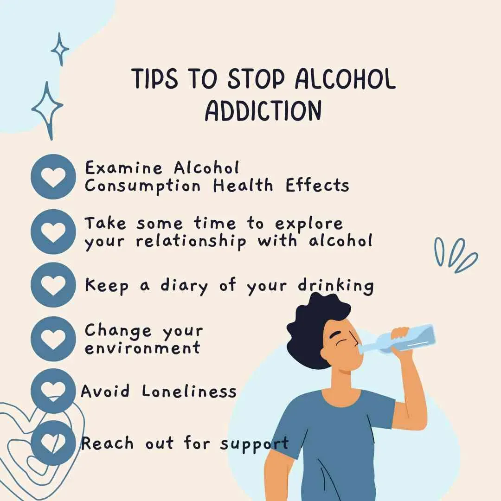
Addictionalcohol addictionTips to stop alcohol addiction by the psychiatrist in GurgaonCelebrating good grades in college or promotion in the office or birthday celebration or even break up with girlfriend – exchanging alcohol glasses has become a common scenario in today’s world. Such…Dr. Gorav Gupta · 5 min read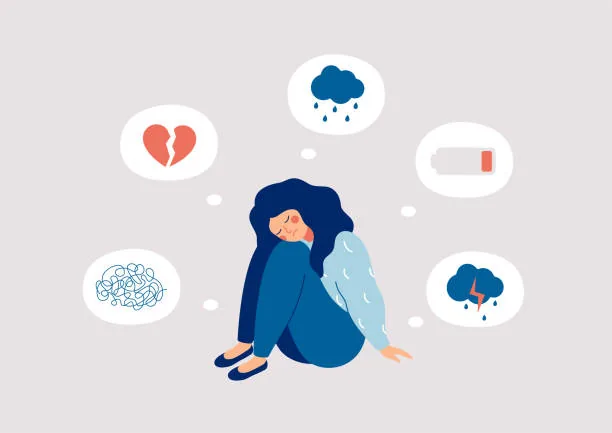
WellbeingTop 10 Tips to Improve Mental Well-being by Psychiatrist in GurgaonMild cough and cold and we book an appointment with the doctor. Our parents, relatives, friends and even acquaintances give us loads of advice on how to keep our bodies healthy and well. Health…Dr. Gorav Gupta · 6 min read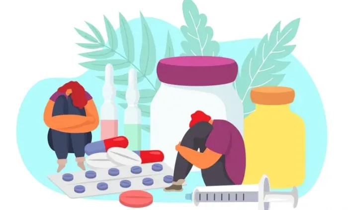
Addictionaddiction treatment, CUDCannabis Addiction: Seeking Help from the Best Psychiatrist in GurgaonCannabis, often referred to as marijuana, is one of the most commonly used psychoactive substances worldwide. While many people use it recreationally without issue, some individuals develop a…Dr. Gorav Gupta · 4 min read- Anxiety & OCDocd, OCD treatmentUnderstanding OCD: The Role of Psychiatrists in Diagnosis and TreatmentObsessive-Compulsive Disorder (OCD) is a challenging mental health condition characterized by intrusive, repetitive thoughts (obsessions) and ritualistic behaviors (compulsions). It can significantly…Dr. Gorav Gupta · 4 min read
- WellbeingA PSYCHIATRIST NEAR METaking care of our mental health is vital for overall well-being and quality of life. When facing mental health challenges, seeking support from a qualified psychiatrist can make a significant…Dr. Gorav Gupta · 7 min read
- Addictiondrug, drug abuseTeenage Drug AbuseThis is a story of Mr B, he had been brought to Tulasi Healthcare in intoxicated state, he was aggressive, violent, and verbally abusive, asking for heroin and he had severe pain in stomach. When the…Dr. Gorav Gupta · 4 min read
- Depression & bipolarBipolar Disorder treatment, Treatment of Bipolar DisorderAre You Suffering From Bipolar Disorder?Due to the constantly changing world, people are facing a tough time struggling with the increased stress levels, no personal communication, fake social life, and unrealistic expectations. This plays…Dr. Gorav Gupta · 2 min read
- Addictionbest rehab center in Delhi., Rehab Centre in DelhiRole of Rehabilitation Center To Counteract Substance AbuseSubstance abuse is one of the major issues of concern across the world irrespective of age and gender. India is also struggling with the menace of drug abuse with a continuous increase in the number…Dr. Gorav Gupta · 3 min read
- Addictionalcohol addiction, DrinkingHow To Overcome Binge Drinking?This is not something new. It happens all the time, all over. Throwing caution to the winds, groups of people (big and small), carefully plan and execute such operations, even planning for the…Dr. Gorav Gupta · 3 min read
- AddictionAlcohol, alcohol addictionManagement of Alcohol Withdrawal SymptomsWhen heavy drinkers try to stop or reduce their alcohol consumption, they face withdrawal symptoms.Dr. Gorav Gupta · 2 min read
- Anxiety & OCDHandling Child Anxiety Through Psychiatric HelpIt is a universal fact that childhood is the most crucial phase of the development of brain among children. One has to understand that the mental health of the child is as important as the physical…Dr. Gorav Gupta · 3 min read
- Addictionalcoholic treatment, AlcoholicsFunctional AlcoholicsAn alcoholic often brings a grim image to our mind of an individual, who is shelter less, moneyless, or wanderer without family or friends.Dr. Gorav Gupta · 2 min read
- Addictiondrug, drug abuseWhy drug abuse is more dangerous for teenagers?In the previous article you went through Mr. B’s story, who started taking substance (alcohol/drugs) at a very early age. Now we will go through some facts that why drug abuse is more dangerous for…Dr. Gorav Gupta · 2 min read
- Depression & bipolarDepression and Personality DisorderUnraveling Personality DisorderMiss M was admitted in Tulasi with the chief complaints of increased consumption of drugs, aggressive, violent behavior, verbally abusive, mood fluctuations, making big claims, over demanding…Dr. Gorav Gupta · 3 min read
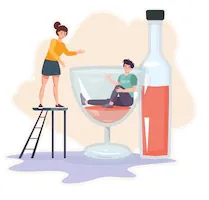
AddictionDelirium, Delirium TremensDelirium TremensAlcoholism is a life threatening disease. Heavy drinkers, when suddenly stop drinking may suffer from life threatening alcohol withdrawal symptom, which are best known as delirium tremens.Dr. Gorav Gupta · 2 min read- Wellbeingrenowned psychiatrist, TeenageCoping with Behavioural Problems in TeenageThe onset of adolescence varies from teenager to teenager. As teen years are an exciting phase of life but not all teens have an easy time. They deal with fluctuating hormones and may be overeager to…Dr. Gorav Gupta · 2 min read
- AddictionBuprenorphine, depressionBuprenorphineBuprenorphine has been used as an opioid medication since October 2002 after the approval of Food and Drug Administration of America. It is a semi-synthetic opioid or an opioid partial agonist. It…Dr. Gorav Gupta · 2 min read
- Depression & bipolarBi-Polar, Bipolar affective disorderBi-Polar Affective DisorderBipolar affective disorder previously named Manic depressive psychosis is where a person suffers from shifts of mood from periods of elation to periods of depression.Dr. Gorav Gupta · 3 min read
 WellbeingAnorexia Nervosa, Anxiety DisorderAnorexia NervosaAnorexia is a serious and a potentially life threatening mental illness. Patients with the disorder are considered very unwell and need a good treatment.Dr. Gorav Gupta · 3 min read
WellbeingAnorexia Nervosa, Anxiety DisorderAnorexia NervosaAnorexia is a serious and a potentially life threatening mental illness. Patients with the disorder are considered very unwell and need a good treatment.Dr. Gorav Gupta · 3 min read- Wellbeing5 Habits of A Good PsychiatristThe role of a psychatrist is of utmost importance when it comes to recovery from mental illnesses and addictions. Until and unless you have a good and reliable psychiatrist, you cannot get rid of…Dr. Gorav Gupta · 3 min read
No articles match.
Try a different word, or clear the filters.
More resources
- Frequently asked questions (FAQ)Answers on consulting, treatment, fees and Dr. Gupta.→
- Ask the DoctorQuestions often asked about mental illness and addiction.→
- Video GalleryFilms and YouTube videos from Dr. Gupta.→
- Video LibraryEvery video in one place: films, centre tours and talks.→
- PublicationsArticles and press coverage.→
- TestimonialsWhat clients and families say.→
- Conditions we treatGuides to every condition and its treatment.→